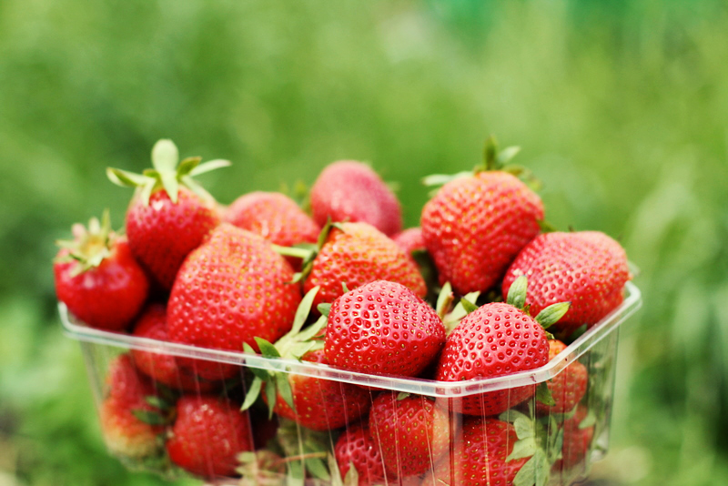

Supply & Demand
Trade creates gains—but a market still needs coordination
Gains from trade
Different opportunity costs create room for mutually beneficial exchange.
Many buyers & sellers
Each arrives with a different willingness to buy or sell.
Market outcome
What price and quantity coordinate their plans?

Why are organic strawberries often more expensive?
Choose the explanation you would investigate first. We will return to this market next class.
A market connects buyers and sellers of one good or service
Market: a group of buyers and sellers of a particular good or service.
The model is a benchmark and prediction—not a claim that every real market adjusts instantly.
One buyer: price changes the quantity demanded
| Price | Alex's quantity demanded |
|---|---|
| $0.00 | 12 |
| $0.50 | 10 |
| $1.00 | 8 |
| $1.50 | 6 |
| $2.00 | 4 |
| $2.50 | 2 |
| $3.00 | 0 |
At each price, add every buyer's quantity
| Price | Alex | Blair | Market |
|---|---|---|---|
| $0.00 | 12 | 7 | 19 |
| $0.50 | 10 | 6 | 16 |
| $1.00 | 8 | 5 | 13 |
| $1.50 | 6 | 4 | 10 |
| $2.00 | 4 | 3 | 7 |
| $2.50 | 2 | 2 | 4 |
| $3.00 | 0 | 1 | 1 |
Demand is the curve; quantity demanded is one point
Demand
The entire relationship between price and quantities demanded.
shifts the entire curve.
Quantity demanded
The amount buyers choose at one particular price.
moves to another point on the same curve.
One seller: price changes the quantity supplied
| Price | Drew's quantity supplied |
|---|---|
| $0.00 | 0 |
| $0.50 | 0 |
| $1.00 | 1 |
| $1.50 | 2 |
| $2.00 | 3 |
| $2.50 | 4 |
| $3.00 | 5 |
At each price, add every seller's quantity
| Price | Drew | Casey | Market |
|---|---|---|---|
| $0.00 | 0 | 0 | 0 |
| $0.50 | 0 | 0 | 0 |
| $1.00 | 1 | 0 | 1 |
| $1.50 | 2 | 2 | 4 |
| $2.00 | 3 | 4 | 7 |
| $2.50 | 4 | 6 | 10 |
| $3.00 | 5 | 8 | 13 |
Supply is the curve; quantity supplied is one point
Supply
The entire relationship between price and quantities supplied.
shifts the entire curve.
Quantity supplied
The amount sellers choose at one particular price.
moves to another point on the same curve.
You are about to become the strawberry market
1 · Join: scan the QR code or open market.zihanzhang.trade/room/are201_unit4
2 · Protect your information: do not share your buyer value or seller cost.
3 · Trade: watch the best bid, best ask, and anonymous transaction tape.

Anonymous Room · one browser · one tab
Trade one unit—and maximize your own payoff
How the market works
- You see only your own buyer value or seller cost. Keep it private.
- Buyers submit bids; sellers submit asks. Watch the live best bid, best ask, and transaction tape.
- Quotes use $0.25 increments. Buyers raise bids but never bid above value; sellers lower asks but never ask below cost.
- A trade occurs when the best bid is at least the best ask. The earlier resting order sets the transaction price.
- Each person can complete at most one trade this round.
Buyer payoff
Value − transaction price
Seller payoff
Transaction price − cost
Your goal
Maximize your own payoff. No completed trade means a payoff of 0. Never reveal your private information.
A favorable health report raises buyer values
Buyer side
Every buyer value rises by $3.
Seller side
Every seller cost stays at its Round 1 baseline.
People and roles
The same participants remain buyers and sellers, with the same value or cost rank.
A drought raises farms’ production costs
Seller side
Every seller cost rises by $3.
Buyer side
Buyer values return to their Round 1 baseline.
People and roles
The same participants remain buyers and sellers, with the same value or cost rank.
The buying side becomes crowded
Market composition
More buyers and fewer sellers, while total class size stays fixed.
Private amounts
Buyer values and seller costs return to their baseline ranges.
Roles are re-dealt
Your role and private amount may differ from Rounds 1–3.
The selling side becomes crowded
Market composition
More sellers and fewer buyers, while total class size stays fixed.
Private amounts
Buyer values and seller costs remain in their baseline ranges.
Roles are re-dealt
Your role and private amount may differ again from Round 4.
Private values and costs generate the market curves
Class demand at price P
Count every buyer whose private value is at least P.
Class supply at price P
Count every seller whose private cost is no more than P.
The bids and asks show bargaining behavior. The assigned values and costs—not the submitted quotes—identify the complete theoretical curves.
When buyers and sellers meet, which price can persist?
At a price of $2.50, buyers want 4 cones while sellers offer 10. What pressure should follow?
Where do buyers' and sellers' plans agree?
| Price | Qd | Qs | Test |
|---|---|---|---|
| $0.50 | 16 | 0 | |
| $1.00 | 13 | 1 | |
| $1.50 | 10 | 4 | |
| $2.00 | 7 | 7 | |
| $2.50 | 4 | 10 | |
| $3.00 | 1 | 13 |
The same equality appears at the intersection
Demand plan
At $2.00, buyers plan to purchase 7 cones.
Supply plan
At $2.00, sellers plan to offer 7 cones.
Move the price: what market condition appears?
A surplus creates a sequence of incentives
Price above equilibrium
The posted price is higher than the market-clearing price.
Qs > Qd
Sellers offer more than buyers plan to purchase.
Unsold inventory
Some sellers cannot complete their planned sales.
Sellers cut price
A lower price is better than leaving output unsold.
Move toward E
Qd rises and Qs falls along the existing curves.
A shortage creates the opposite pressure
Price below equilibrium
The posted price is lower than the market-clearing price.
Qd > Qs
Buyers want more than sellers plan to offer.
Buyers compete
Some buyers cannot purchase the good at that price.
Price rises
Sellers can charge more when customers are waiting.
Move toward E
Qd falls and Qs rises along the existing curves.
The health report changed buyers’ willingness to pay
What changes?
Every buyer value rises by $3.
What stays fixed?
Seller costs and each participant’s role stay unchanged.
What did we observe?
Compare the recorded average price and transaction quantity with Round 1.
Use the experiment first; then name the curve change on the next slide.
What can change demand at every price?
Why does demand increase to the right—and decrease to the left?
Increase in demand → right
At the same price P₀, buyers now want a larger quantity. A larger quantity is farther right on the horizontal axis.
Decrease in demand → left
At the same price P₀, buyers now want a smaller quantity. A smaller quantity is farther left on the horizontal axis.
Market demand grows or shrinks with the buyer pool
Holding each buyer’s demand fixed, adding buyers raises the market quantity demanded at every price; losing buyers lowers it.
A convention brings thousands of visitors into the downtown restaurant market.
Students leave town, reducing demand at nearby cafés.
Students leave for summer. What happens to demand for café lunches near campus?
Income can shift demand in opposite directions
Normal good
Income ↑ → demand ↑. Income ↓ → demand ↓.
Inferior good
Income ↑ → demand ↓. Income ↓ → demand ↑.
“Inferior” is not a judgment about quality. It describes an income–demand relationship. The same good can change category over different income ranges.
The label comes from the income response—not the product
Normal-good examples
When income rises, demand for these goods often rises.
Possible inferior-good examples
When income rises, demand for these goods may fall.
These are common possibilities, not permanent labels. Ask: holding price fixed, does demand rise or fall when income rises? A bus trip—or any good—can be normal for a different buyer or market.
Another good’s price can redirect demand
Substitutes can replace each other; complements are consumed together. Change the related good’s price—not this good’s own price.
Dairy milk price ↑ → quantity demanded of dairy milk ↓ → demand for soy milk shifts right.
Printer price ↑ → quantity demanded of printers ↓ → demand for ink shifts left.
Memory cue: substitutes move demand in the same direction as the other good’s price; complements move it in the opposite direction.
The price of dairy milk rises. What happens to demand for soy milk?
Related goods can be collectible, wearable, or digital
Substitutes
Two products can satisfy a similar want or compete for the same budget.
Complements
Two products are more useful or enjoyable when consumed together.
A and B are substitutes.
A and B are complements.
Context matters: Jellycat and Labubu are substitutes only for buyers who see them as alternatives. If a collector wants both, the relationship could be different.
What buyers want can change—even when price does not
Information, trends, advertising, seasons, or urgent needs can change willingness to buy at every price.
A favorable health report raises willingness to pay for strawberries.
A hurricane warning raises demand for bottled water before the storm.
A trusted health report links sugary drinks to health risks. What happens to demand for soda?
Beliefs about tomorrow can change demand today
Expected future prices, income, availability, or needs can change how much consumers want to buy now at every current price.
For a storable good, buying earlier can raise current demand.
Households may postpone a large purchase, reducing current demand.
Consumers expect coffee prices to rise next week. What happens to demand for coffee today?
Who is in the market matters—not only how many
Even with the same population size, a change in age, household structure, or other buyer characteristics can shift demand for a particular good.
A larger older share raises demand at every hearing-aid price.
If the share of young children falls, demand falls at every tricycle price.
Do not double-count: “number of buyers” changes market size; “composition” changes the mix of buyers.
The population is the same size, but the share age 65+ rises. What happens to demand for hearing aids?
Which way does the demand curve move?
The price of dairy milk, a substitute, increases.
The drought changed farms’ production costs
What changes?
Every seller cost rises by $3.
What resets?
Buyer values return to their Round 1 baseline.
What did we observe?
Compare the recorded average price and transaction quantity with Round 1.
Compare Round 3 with Round 1—not cumulatively with Round 2.
Why does supply increase to the right—and decrease to the left?
Increase in supply → right
At the same price P₀, sellers now offer a larger quantity. A larger quantity is farther right on the horizontal axis.
Decrease in supply → left
At the same price P₀, sellers now offer a smaller quantity. A smaller quantity is farther left on the horizontal axis.
What can change supply at every price?
Market supply expands or contracts with the seller pool
Holding each seller’s supply fixed, adding sellers raises the market quantity supplied at every price; losing sellers lowers it.
More lawn-care businesses begin serving a neighborhood.
Several local repair shops close permanently.
Ten new food trucks enter downtown. What happens to the supply of food-truck lunches?
Input prices change the cost of producing each unit
Higher prices for labor, materials, energy, or other inputs make production less profitable at every output price and usually reduce supply.
Cheaper flour lowers bakeries’ cost of producing bread.
Higher hourly wages raise a car wash’s service cost.
The price of cotton fabric rises. What happens to the supply of custom T-shirts?
Better technology can raise output from the same inputs
Productivity-improving technology lowers the input cost or time required per unit, allowing firms to supply more at every price.
Scheduling software lets a clinic complete more appointments.
A platform outage limits how many deliveries can be coordinated.
Faster 3D printers reduce production time for custom phone cases. What happens to supply?
Weather and biology can change productive capacity
Natural conditions affect crop yields, catches, disease losses, construction time, and other limits on how much sellers can produce.
Calm seas increase the number of productive fishing days.
A livestock disease reduces farms’ marketable output.
Ideal growing weather raises blueberry yields at North Carolina farms. What happens to supply?
Policy shifts supply when it changes sellers’ costs
A per-unit tax or costly requirement raises production cost and shifts supply left; a cost-reducing subsidy shifts supply right.
A payment per installed unit reduces firms’ effective cost.
A new per-unit inspection fee raises marginal cost.
A subsidy lowers firms’ cost of each residential heat-pump installation. What happens to supply?
Beliefs about tomorrow can change supply today
For goods that can be stored or whose production timing can change, an expected future price can shift how much sellers offer today.
Sellers may release inventory now, shifting current supply right.
Sellers may withhold a storable good, shifting current supply left.
Resellers expect limited-edition sneaker prices to rise next month and hold inventory. What happens today?
Movement along a curve—or a shift?
The market price of strawberries falls.
Use four steps for every market shock
Draw the initial market
Identify the curve
Choose the direction
Compare equilibria
Hot weather increases demand for ice cream
At every price, more consumers now want ice cream. Supply conditions are unchanged.
Predict the new equilibrium:
A drought reduces the strawberry harvest
At every price, farms can now offer fewer strawberries. Consumer preferences are unchanged.
Predict the new equilibrium:
Select a shock and explain the outcome
P* ↑ · Q* ↑
Increase in demand
At every price, buyers want more. Demand shifts right. The new intersection lies at a higher price and a higher quantity.
Analyze each shock separately—then combine
Suppose a major employer hires thousands of workers in the Triangle. At the same time, several new apartment buildings open.
Organic strawberries: demand and supply both increase
Demand shifts right
Stronger preferences for organic food and higher incomes increase demand at every price.
Supply shifts right
More farms enter or production methods improve, increasing supply at every price.
Combine the two effects. What can we determine?
When D and S both increase, price depends on which shifts more
Equal-sized shifts have offsetting effects on price, while both raise quantity.
Use the matrix only after you can explain each cell
| Demand \ Supply | No change in S | S increases | S decreases |
|---|---|---|---|
| No change in D | P same Q same | P ↓ Q ↑ | P ↑ Q ↓ |
| D increases | P ↑ Q ↑ | P ambiguous Q ↑ | P ↑ Q ambiguous |
| D decreases | P ↓ Q ↓ | P ↓ Q ambiguous | P ambiguous Q ↓ |
Ambiguous does not mean “nothing happens.” It means the direction cannot be determined without relative magnitudes.
Two shocks hit the fresh-strawberry market
Consumer interest rises as drought cuts the harvest
A widely shared nutrition report increases consumers' preference for fresh strawberries. During the same season, severe drought reduces strawberry yields.
Observed price–quantity points do not trace a demand curve
What the data show
Price and quantity both rose. Did demand shift, supply shift, or both?
Five moves you should now be able to make
Name the determinant and distinguish shift from movement.
Find P* and Q* in a table or graph.
Explain the incentive chain from shortage or surplus.
Apply four steps to one market shock.
Combine two shocks and identify ambiguity.
Supply shifts right; demand shifts right. Equilibrium quantity definitely increases. Equilibrium price is ambiguous because the two price effects oppose each other.
Adapted for ARE 201 from OpenStax, “Demand and Supply,” and Jiaming Mao, Supply and Demand (2018).